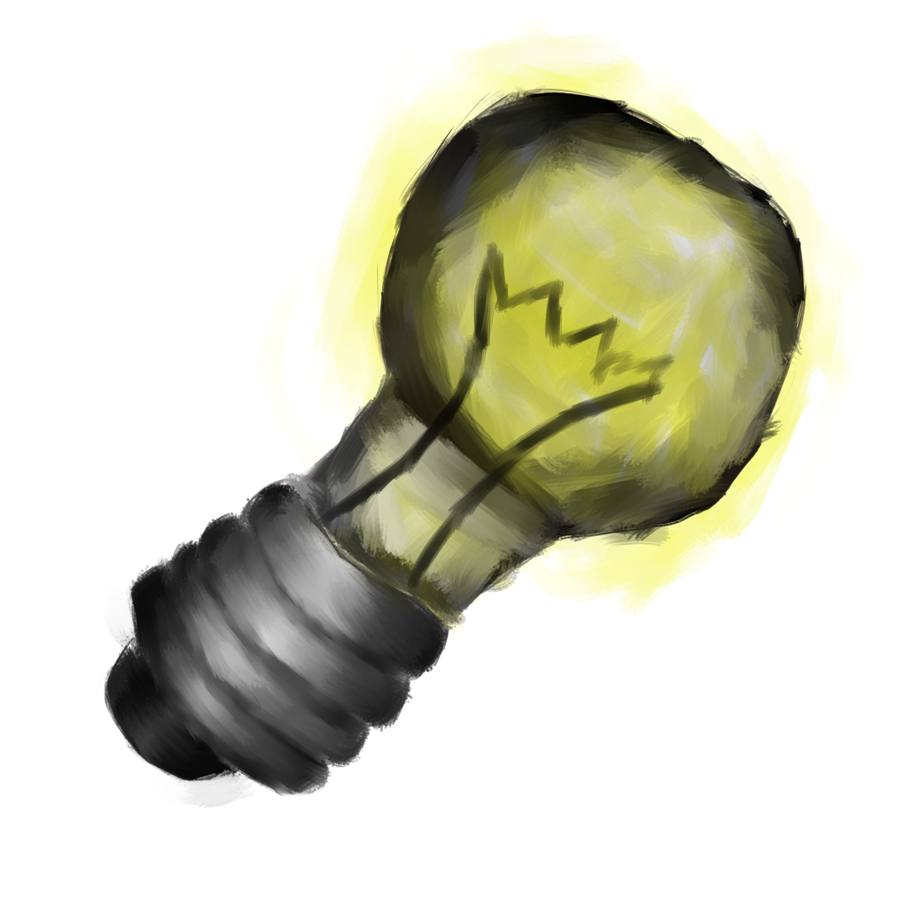

Some Title Here
Some Title Here
Hello, and welcome to my genius hour catalog. This is a showcase of a array of projects that I work on during the designated time for genuis hour. In addition to the projects, there will be a page deticated to what I have learn throughout the process of compleate the projects. This showcase may be bare at first, but after a few months it will be thriving with a plethora of different projects, mainly made consisting of programming applications that I develope. The plan, and a step by step written document will be included in each project.